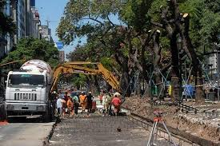
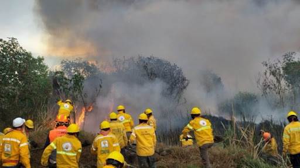

¿Cuáles son las principales causas de la deforestación en México?
1Agricultura y ganadería
La conversión de bosques en tierras agrícolas y pastizales es una de las principales causas de la deforestación. Los pequeños agricultores y los grandes productores industriales talan bosques para cultivar cultivos comerciales como maíz, aguacate y soya, así como para establecer pastizales para el ganado.
2Tala ilegal
La explotación maderera ilegal es otro factor significativo. A menudo, esta actividad no regulada se realiza sin considerar la sostenibilidad del recurso, lo que resulta en una rápida pérdida de cobertura forestal.
3Urbanización y desarrollo
El crecimiento de las ciudades y la expansión de la infraestructura, como carreteras y asentamientos humanos, también contribuye a la deforestación. La construcción de viviendas y proyectos de desarrollo requieren la limpieza de áreas boscosas.
4Incendios forestales
Tanto los incendios provocados como los naturales pueden resultar en una pérdida considerable de bosques. La falta de control adecuado y la respuesta ineficaz a los incendios contribuyen al problema.
5Minería
La extracción de minerales a menudo implica la remoción de grandes áreas de bosque. Las operaciones mineras, legales e ilegales, devastan ecosistemas forestales y contribuyen a la degradación ambiental.


Opniones de la gente ante la deforestación
Leoncio Rafael Arana Benavides
Él financiamiento de la infraestructura básica para ello, correría por cuenta del estado (trasvase de las aguas de los ríos de la Cuenca atlántica, a la sierra y costa, represas, canales principales de regadío, carreteras enripiadas).
Radio Hurakan 88.7 Fm Saposoa
el estado invierte millones con poco resiltado
Organizaciones

PROFEPARealiza programas de inspección y vigilancia del aprovechamiento de nuestros recursos naturales, procurando su conservación y manejo sustentable. |

MEXICANOS SEMBRANDOEs un programa del Gobierno de México que busca contribuir al bienestar social de sembradoras y sembradores a través del impulso de la autosuficiencia alimentaria. |

CONAFORTiene como metas: crear e incrementar activos ambientales para el siglo XXI; hacer compatible el desarrollo y conservación de los recursos forestales con sus recursos asociados; coordinar las estrategias de agua-bosque-suelo. |